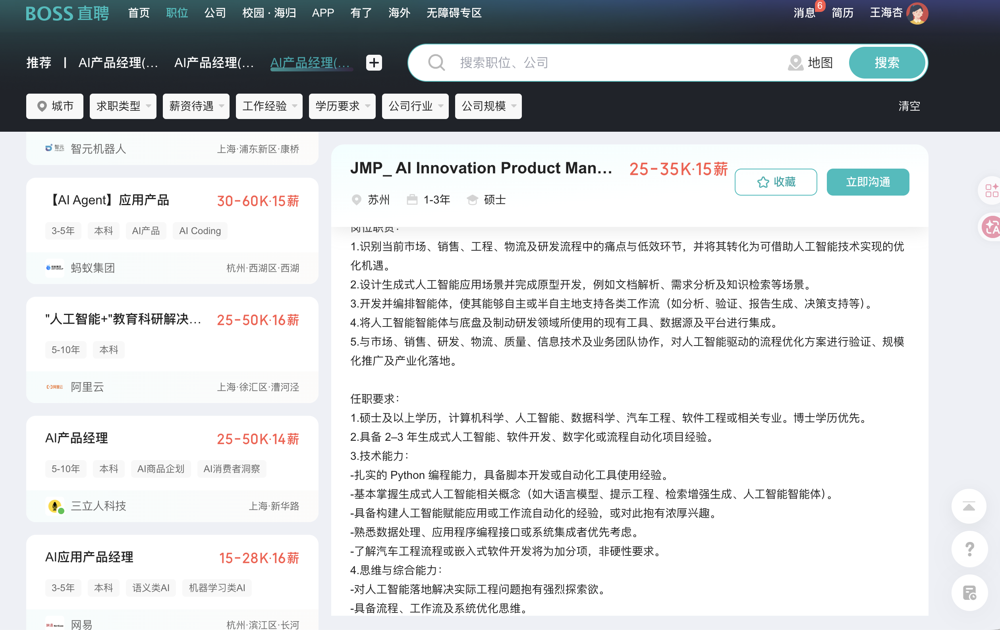
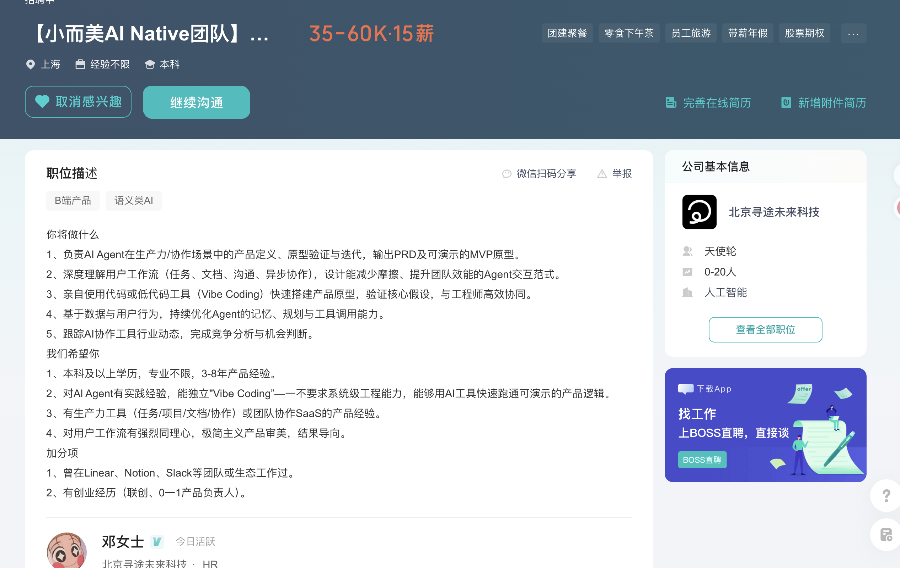

兔兔投递
从岗位页面到确认投递
首次：配置 AI → 上传简历 → 确认解析；日常：打开岗位 → 分析 → 确认发送。
配置你的 AI
在插件「设置」中填写 API 地址、模型和 Key，点击“测试连接”。你的 Key 只保存在本机。
上传简历图片
上传 JPG 或 PNG 简历。AI 会提取经历、项目、技能和可用于招呼语的真实证据；请检查并保存。
打开 BOSS 岗位页面
支持职位列表和岗位详情页。插件会自动读取当前页面上的岗位名称、地点、薪资、公司与完整 JD，不需要复制。

分析、确认并发送
点击“分析当前岗位”，选择或修改 AI 招呼语。确认后，插件会点击沟通入口、发送招呼语和简历图片，并把岗位自动记入岗位库。
